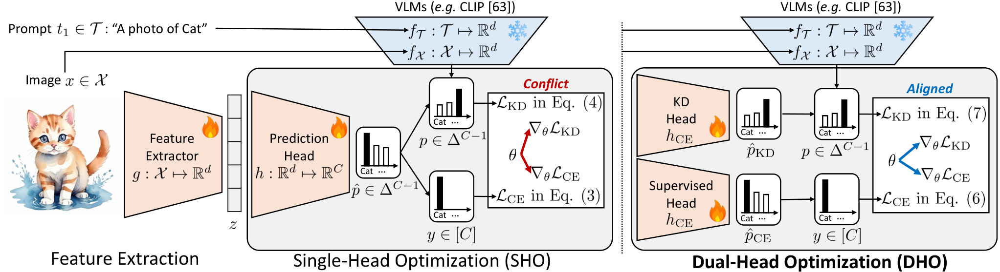
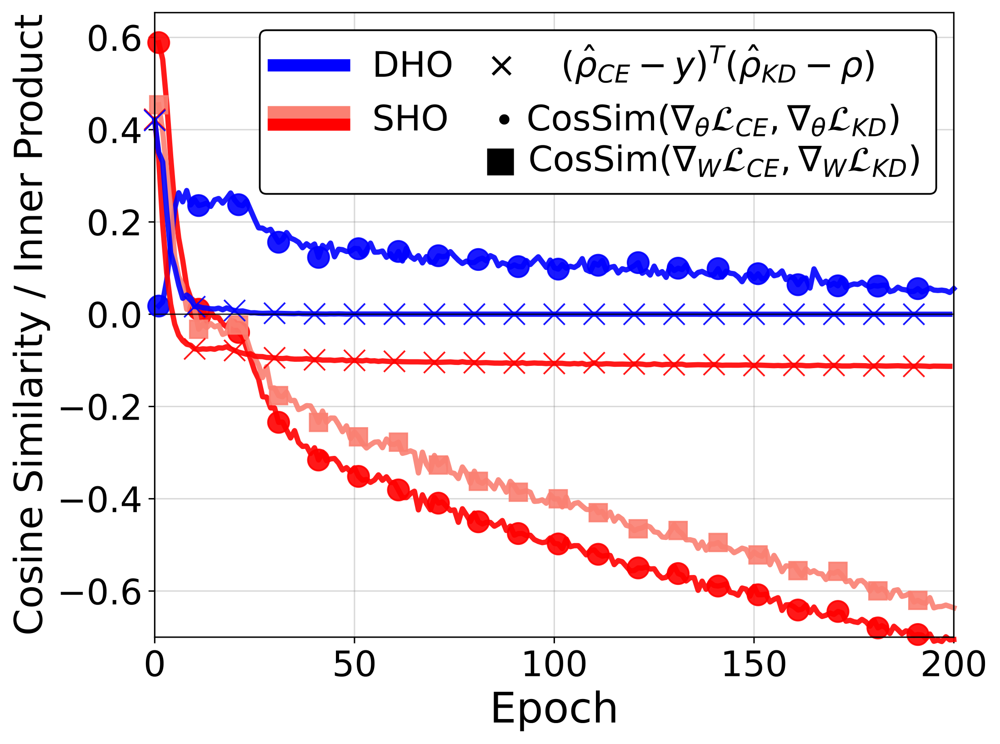
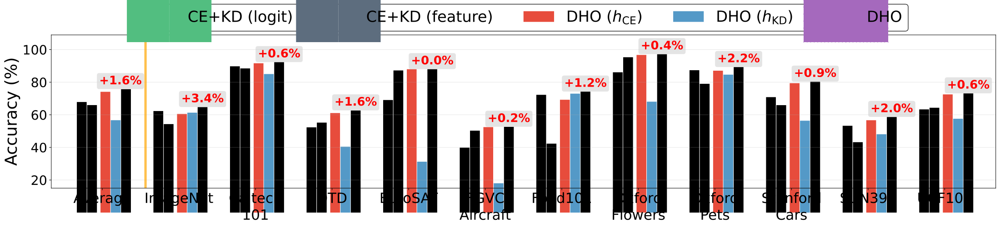
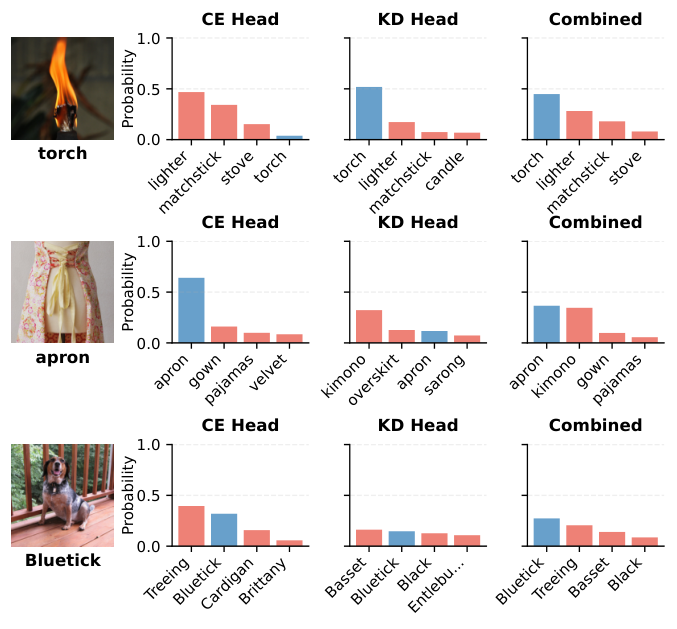
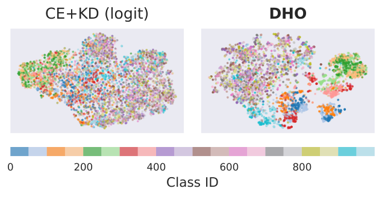

Vision-language knowledge distillation / 2025
DHOSimple yet Effective Semi-supervised Knowledge Distillation from Vision-Language Models via Dual-Head Optimization
* Equal contribution


Abstract
Two objectives, two heads, one student
Vision-language models can recognize classes from text descriptions, making them useful teachers when labeled images are scarce. Yet a student must reconcile two different targets: the one-hot ground-truth label and the teacher’s distribution over classes. A conventional single-head student applies both objectives to the same classifier, where their gradients can conflict.
Dual-Head Optimization (DHO) separates these objectives into a supervised head and a knowledge-distillation head over a shared image encoder. The supervised head learns task-specific discrimination from labeled images; the distillation head learns the teacher’s predictions from labeled and unlabeled images. At inference, a calibrated mixture combines their complementary predictions without another training stage.
The paper examines optimization conflicts, the relationship to single-head learning, and the quality of the shared representation. Experiments span 15 datasets: 11 recognition datasets and four ImageNet distribution shifts. DHO is evaluated with compact convolutional students, vision transformers, zero-shot and few-shot teachers, and adaptation methods that update only a small part of a vision-language model. This page follows the revised v2 paper.
Method
Separate supervision during training; combine it at inference
For each image, the shared encoder produces a feature vector z. A cross-entropy head hCE receives labeled examples, while a distillation head hKD matches the frozen teacher on both labeled and unlabeled examples. The training weight λ controls how much each objective contributes to the shared encoder.
At test time, DHO mixes probabilities rather than selecting one head. Two inference parameters have different roles: α sets the mixture weight, and β adjusts the temperature of the distillation head. Both can be selected after training using validation data; neither requires fitting another student.
Why separate heads?
A teacher can assign meaningful probability to several related classes even when the label identifies only one correct class. Forcing one classifier to fit both targets creates competing updates. Separate heads remove this direct parameter conflict in the classifiers. The feature extractor remains shared, so its optimization still needs to be examined empirically.


Figure 3 · Paper v2.
The analysis relates DHO to the optimal single-head predictor under an ε-convergence assumption. With α = λ and β = 1, the interpolated output approximates that predictor in L1 distance. This supports the combination rule under the stated assumptions, while the experiments test its usefulness in practical training. For vision-language students, text-encoder initialization and cosine-similarity alignment further match the teacher’s prediction space.
Sections 2.1–2.4; Equations 4–8 · Paper v2.
Results
Learning with few labeled examples
The few-shot setting uses 1, 2, 4, 8, or 16 labeled examples per class, treating the remaining training images as unlabeled. DHO uses a zero-shot CLIP teacher; DHO-F adapts the teacher with Tip-Adapter-F using the same labeled set. The comparison below fixes the label budget at 16 examples per class on ImageNet.
| Method | ResNet-18, from scratch | ResNet-50, self-supervised |
|---|---|---|
| Cross-entropy only | 8.2 | 47.0 |
| CE + feature distillation | 33.8 | 54.3 |
| CE + logit distillation | 51.2 | 62.3 |
| SSKD | 52.0 | 64.0 |
| DHKD | 26.8 | 55.2 |
| DHO | 54.5 | 64.7 |
| DHO-F | 57.7 | 66.8 |
Table 1 · Paper v2.
The ResNet-50 DHO-F student reaches 66.8%, compared with 65.4% for its 16-shot Tip-Adapter-F teacher. The two student columns also show why initialization matters: training a compact model from scratch is a substantially different setting from adapting a self-supervised representation.
Low-shot ImageNet with vision transformers
The low-shot experiments instead label 1% or 10% of ImageNet and use a ViT-H/14 teacher. Keeping the student architecture fixed, the comparison with single-head logit distillation isolates the benefit of the dual-head approach.
| Student | Training method | 1% labels | 10% labels |
|---|---|---|---|
| ViT-B/16 · 86M parameters | CE + logit KD | 79.8 | 80.4 |
| ViT-B/16 · 86M parameters | DHO | 81.6 | 82.8 |
| ViT-L/14 · 304M parameters | CE + logit KD | 83.1 | 83.6 |
| ViT-L/14 · 304M parameters | DHO | 84.6 | 85.9 |
Table 3 · Paper v2.
DHO’s gain over this same-architecture baseline is 1.8–2.4 percentage points. The paper also compares against larger semi-supervised systems, but these differ in architecture and training procedure; those comparisons should be read separately from the controlled single-head comparison.
Generalization
Does adaptation preserve transfer?
The distribution-shift evaluation adapts CLIP ViT-B/16 on ImageNet, then tests ImageNet-V2, ImageNet-Sketch, ImageNet-R, and ImageNet-A. DHO can be combined with existing parameter-efficient methods, including visual prompt tuning (VPT), CoOp, and PromptSRC. The average below covers the four shifted datasets, excluding the original ImageNet validation set.
| Adaptation | ImageNet validation | Mean over 4 shifts |
|---|---|---|
| Zero-shot CLIP | 66.7 | 59.1 |
| Linear probing | 72.8 | 61.4 |
| DHO with unlabeled data | 74.6 | 63.2 |
| VPT | 73.6 | 62.0 |
| VPT + DHO with unlabeled data | 75.1 | 63.9 |
| CoOp | 71.5 | 61.7 |
| CoOp + DHO | 73.4 | 63.3 |
| PromptSRC | 71.3 | 62.8 |
| PromptSRC + DHO | 73.6 | 63.7 |
Table 2; see paper for each adaptation budget · Paper v2.
These results test DHO as an addition to several adaptation procedures. They do not imply that every use of distillation improves every distribution shift, but show consistent average gains for the combinations evaluated here.
Analysis
What each head contributes


Figure 6 · Paper v2.
The heads retain different information after training. The supervised head can correct a teacher’s task-specific error, while the distillation head can preserve useful distinctions that are difficult to learn from a few labels. Combining them improves the reported mean without a degradation on any of the 11 datasets in this head-comparison experiment.


Figure 7 · Paper v2.
The shared features improve too
To evaluate the encoder independently of the learned heads, the paper freezes features trained with 16-shot supervision and fits a linear probe using the full labeled ImageNet training set. DHO yields 67.1% top-1 accuracy, compared with 66.2% for logit distillation and 62.3% for feature distillation. This diagnostic supports an improvement in the representation, beyond an inference-only ensemble effect.


Figure 8 · Paper v2.
An appendix comparison with PCGrad asks whether directly modifying conflicting gradients is sufficient. Across eight datasets at 16-shot, average accuracy is 69.8% for CE + KD, 71.6% with PCGrad, and 79.1% with DHO. An adaptive entropy-based inference weighting rule does not consistently improve on the fixed mixture, supporting the simpler inference choice.
Table 5; Appendix E.2, Table 13; Appendix E.4, Table 16 · Paper v2.
Resources & scope
A small inference change, with released checkpoints
Two heads add parameters, but the shared encoder still runs once. For ResNet-18, the paper reports 11.69M → 12.20M parameters, unchanged rounded FLOPs of 1.83G, and throughput of 3525.7 → 3518.6 images/s under its measurement setup. The parameter increase is more noticeable for very small students, so “negligible overhead” should not be assumed for every architecture.
DHO also combines with token merging: on the 1%-label ViT-B/16 setting, FLOPs fall by 25.4% and throughput rises by 32.9%, while accuracy changes from 81.6% to 81.4%. This is a separate efficiency experiment, not the configuration of the headline checkpoint table.
The study focuses on image classification. Its theoretical statements depend on convergence assumptions, and applications to detection, segmentation, or other modalities remain future work. Training code, configurations, and the four low-shot ImageNet checkpoints are available through the project repository and Hugging Face.
Appendix C.3, Tables 9 and 11; Section 4 · Paper v2.
| Student | 1% labeled ImageNet | 10% labeled ImageNet |
|---|---|---|
| ViT-B/16 | 81.6% · download | 82.8% · download |
| ViT-L/14 | 84.6% · download | 85.9% · download |
Table 3; checkpoint links from the official repository · Paper v2.
Reference
BibTeX
@article{kang2025simple,
title={Simple yet Effective Semi-supervised Knowledge Distillation from Vision-Language Models via Dual-Head Optimization},
author={Kang, Seongjae and Lee, Dong Bok and Jang, Hyungjoon and Hwang, Sung Ju},
journal={arXiv preprint arXiv:2505.07675},
year={2025},
url={https://arxiv.org/abs/2505.07675}
}Explanations on this page summarize the paper. Figures and numbered results are attributed to version 2; see the paper for complete protocols and references.